Longitudinal datasets
that make drift measurable: the same entities observed for years, with every record tied to what it shows.
Applied machine learning research · Dhaka, Bangladesh
Datasets, benchmarks and audits for personalization systems: the measurement side of trustworthy AI, rather than the model side. My work asks whether a reported number survives contact with the conditions it will actually meet: a different year, a different population, a user who cannot see what the system withheld.
The clearest example is BoviShift, a longitudinal benchmark I lead as first author. I collected its data myself over six years, from 2021 to 2026, and built it to separate what a model has genuinely learned from what it merely remembers.
As a Staff Machine Learning Engineer at Graaho Technologies, I have spent nearly eight years shipping recommendation, vision and LLM systems in production. I am applying to US PhD programmes in computer science for Fall 2027, and I am open to applied scientist roles.
Evaluation instruments for personalization
Personalization is where AI most often acts for someone instead of answering them. That makes it the right place to ask a measurement question: how would we know when a system has stopped deserving the trust it already has?
Most evaluation in this area scores a model on a held-out slice of the data that trained it. That answers a narrow question very reliably. The failures that hurt in deployment sit outside it: an animal, or a user, who appears on both sides of a split and quietly inflates the score; a population that drifts for years while the benchmark stands still; an explanation that reads well and has nothing to do with how the model actually ranked. So I build instruments rather than models.
that make drift measurable: the same entities observed for years, with every record tied to what it shows.
that separate leakage from real generalisation, so an accuracy drop can be attributed rather than only reported.
that check whether a system's account of itself is true: is the stated reason how it actually decided?
Longer term I want to take the same problem to agentic systems, which make decisions on a person's behalf, where an unverified decision costs more than a bad suggestion. I have not published on agents yet. The benchmarks and audits below are the groundwork an honest agent evaluation will need.
All of it comes out of production. Nearly eight years of shipping recommenders, vision pipelines and multi-tenant inference taught me which failures stay silent. The research is how I measure the things I used to patch.
One lead benchmark, one audit in preparation, and the work that led to them
From 2021 to 2026 I collected images of the bulls sold through one livestock marketplace in Bangladesh: 2,657 animals, with every photograph tied to the animal it shows. Six years is long enough for the population to change under the task. The identity link is what lets you ask the uncomfortable question of any vision benchmark: is the model generalising, or does it remember the cow?
The contribution is a three-way protocol decomposition. A random split lets the same animal sit on both sides of the boundary. Holding identities apart shows what the model really generalises, and testing forward in time shows what the population did. The drop between the first two protocols is identity leakage; the drop between the second and third is temporal shift. Most personalization data is repeated observation of the same people, so the decomposition carries straight over to recommender benchmarks.
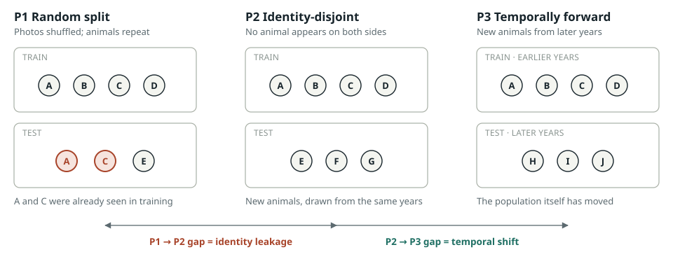
Nilambar Halder Tonmoy and Dr. Md Saef Ullah Miah joined me for the experiments and the write-up, and the three of us are extending the benchmark together.
The 2024 cohort is held out of the primary temporal arm. Its missingness is non-random, and including it would let a collection artifact pass as distribution shift. That is the error the protocol exists to prevent.
Language models have made recommendation explanations fluent, and fluency is easy to mistake for honesty. Ask an LLM why it surfaced an item and it will give you a reason whether or not that reason had anything to do with the ranking. Users reasonably treat a stated reason as a real one. The gap between the two is measurable, and mostly unmeasured.
The audit tests three things together, and I built it to run without GPU compute on purpose. An audit that needs a cluster is one most teams will never run against their own system.
The signals that actually moved the item up the list
The sentence of explanation the user reads, and the item facts it cites
Does the explanation describe the actual basis of the recommendation?
Does the system invent attributes of the items it recommends?
Does either failure fall unevenly across groups of users?
2018 to 2022
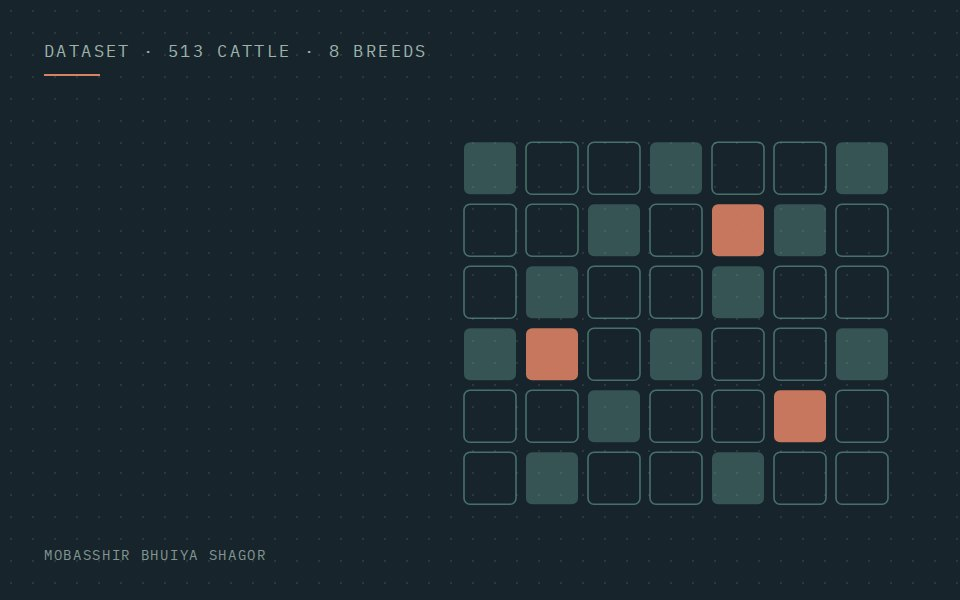
ICCA 2022The first public release from this line of work: 513 cattle across 8 breeds, with 2,052 photographs and 15,812 video frames, each animal annotated for ten attributes including weight, height, age and breed. I released it with regression and classification baselines, so the data arrived with evidence of what it supports. It is the most-starred and most-forked repository on my GitHub.
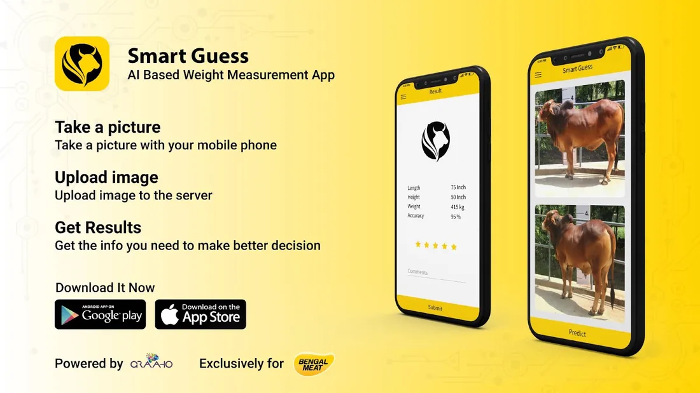
2019 · where it startedMask R-CNN finds the girth, front and back of the animal; a multi-input-output network predicts height, length, weight and breed. Length and weight were badly imbalanced, so I treated them as regression rather than forcing them into classes. Second runner-up for AI in Agriculture at the BASIS National ICT Awards 2019. A later PyTorch version, trained on 13,964 images, is still used for procurement screening at Bengal Meat.
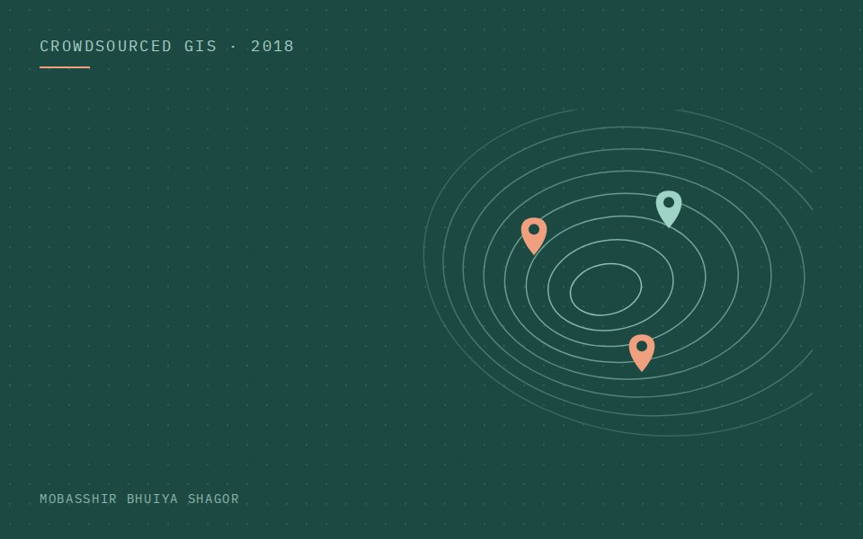
ICCA 2020A crowdsourced GIS that classifies places by problem category from how people feel about them, using a category-affect-space model and multi-label classification. I led the thesis group from a Top 10 finish at the SDG Hackathon 2018 to publication. Looking back, it was the same instinct in an earlier form: the contribution was a way of collecting and representing data, not a model.
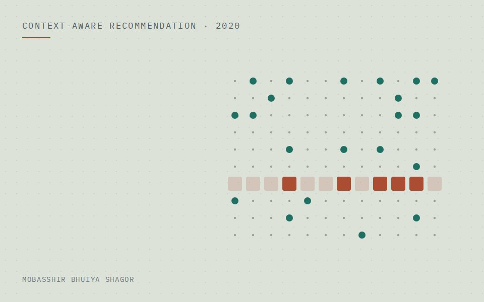
NUS · 2020A context-aware food recommender that conditions on weather, day of week and time of day. I started with classical collaborative filtering on Surprise and Implicit, moved to DLRM once cold start and sparsity became the real problems, and then spent most of the effort on low-latency online prediction. Built under NUS supervision in their prototype development programme.
Peer reviewed and in progress
Sole author
ICCA '22: Proceedings of the 2nd International Conference on Computing Advancements, ACM, pp. 450–455
@inproceedings{shagor2022cid,
title = {CID: Cow Images Dataset for Regression and Classification},
author = {Shagor, Mobasshir Bhuiya and Alvi, Md. Zahidul Haque and Hasan, Khandaker Tabin},
booktitle = {Proceedings of the 2nd International Conference on Computing Advancements},
series = {ICCA '22},
pages = {450--455},
year = {2022},
publisher = {ACM},
doi = {10.1145/3542954.3543018}
}
ICCA 2020: Proceedings of the International Conference on Computing Advancements, ACM, pp. 1–4
@inproceedings{shagor2020cam,
title = {CAM - Categorized Affect Map: Implementation of a Smart Geographic
Information System for Categorizing Places Based on People's
Affective Responses},
author = {Shagor, Mobasshir Bhuiya and Al Rayhan, Mahmood and Huq, Kazi Imdadul
and Nahar, Irin and Hasan, Khandaker Tabin},
booktitle = {Proceedings of the International Conference on Computing Advancements},
series = {ICCA 2020},
pages = {1--4},
year = {2020},
publisher = {ACM},
doi = {10.1145/3377049.3377074}
}
Where the research questions came from. Each opens into the full case study.
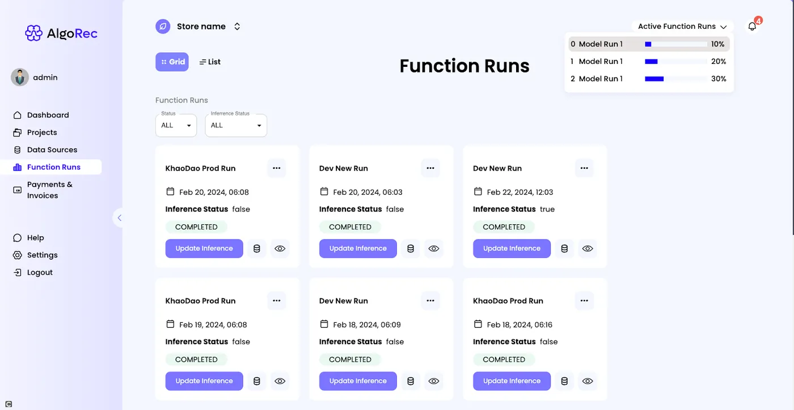
Recommendation platform · AWS Marketplace
AlgoRec
No candidate model went live until it had been scored by AUC against a popularity baseline. A recommender that cannot beat "show the bestsellers" is an expensive way to do nothing. That rule was an early, informal version of what my research now does deliberately, and it ran in production years before I had a name for it.
The setting made the rule necessary. The signal is implicit, since nobody rates anything and they just buy. The matrix is overwhelmingly sparse, and a degraded model fails silently, returning ten confident items that are wrong. When every API call is billed, plausible-but-wrong stops being a modelling inconvenience and becomes a billing dispute. I researched and built two models on NVIDIA Merlin and an ALS model on implicit feedback, weighting confidence so that a repeat purchase outweighs a single glance, and masked already-purchased items from every ranking.
Serving is a search problem: embeddings are precomputed during training and queried through an approximate nearest-neighbour index in 64 dimensions. Training runs go over Redis to isolated Celery workers with hard time limits and memory guards; every run is versioned in MLflow, exactly one is ever marked servable, and quota is checked before inference rather than after. Two real problems it solved: predicting the next restaurant for 18,948 delivery customers, and turning a WooCommerce catalogue into a live endpoint on a five-minute sync.
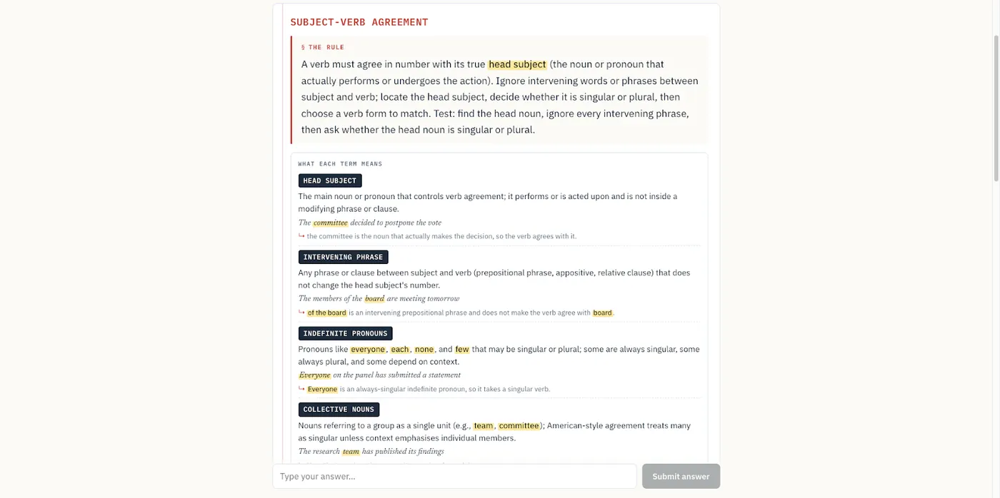
Adaptive writing tutor · personal project
Margin
I built Margin for my own exam preparation first. It adapts to one learner, which makes it a personalization system, and a personalization system built on a language model inherits the model's failure modes: a hallucinated band score sends a candidate into a real exam prepared against a false signal. So the model does the hard reasoning, and deterministic code decides what the learner is allowed to see.
It personalises on two-stage mastery, spaced review, and the error patterns from the last three graded essays, which pull matching lessons forward. Every response crosses a validation boundary before it renders. Eighteen normalizers treat provider output as untrusted input. Scores are clamped to each exam's legal scale, band aggregates are recomputed in code from their components so a headline can never contradict the numbers beneath it, and the client, not the model, owns every state machine. Each guard is there because a real provider broke that rule. The 254 teaching entries are written by hand, so they cannot hallucinate or change between runs.
I raised an output ceiling I believed was truncating explanations, then measured output at about 1,128 tokens against the original 1,250 limit. The hypothesis was wrong, and the finding stays in the record.
margin.mobasshirbhuiya.comResearch notesSource (private, access on request)
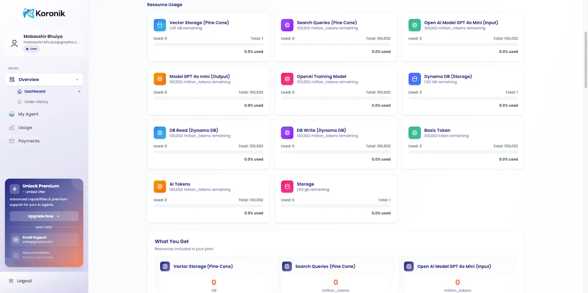
Bank customer-service agents · 5,000+ users a day
Koronik
A bank chatbot that invents an account rule doesn't produce a bad answer. It produces a compliance incident. Koronik runs customer service for Islami Bank Bangladesh across web, WhatsApp, Messenger and Facebook comments, at under 500 ms, and the hard engineering was never the answer path. It was everything the model is not allowed to do.
Retrieval is the contract: agents answer only from content the bank has approved. Every response carries a confidence score, and below the threshold the agent stops and routes the customer to a hotline, a branch or a person instead of producing something plausible. A refusal costs a click; a confident wrong number costs a customer. In multi-tenant retrieval, leakage between tenants is a breach, so isolation is enforced at the DynamoDB partition key rather than in the prompt. Frustrated conversations escalate to human agents, who get suggested replies rather than autonomous ones: the model drafts, a person sends. Every out-of-scope question is logged against the knowledge base, so refusals become the list of what the agent still cannot answer.
That feedback loop is reviewed by people today. Nothing retrains itself yet. It is next to close.
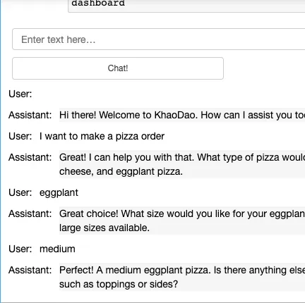
Conversational ordering agent
KhaoDao GPT
KhaoDao GPT pairs Llama models with Elasticsearch retrieval over local restaurants, menus and items. It takes a customer from "suggest me something nearby" to a complete order payload for the backend.
Of everything I have shipped, it is the closest to the agentic personalization I want to study: a model acting for one person, on that person's preferences, with money at the end of the conversation.
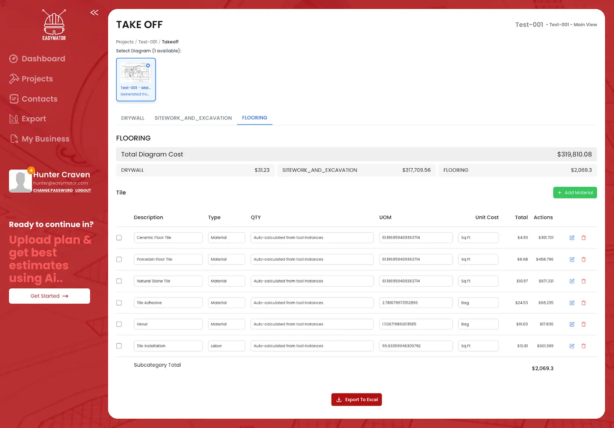
Construction takeoff · FastAPI
Easymator
Drawings arrive as PDFs and are rasterised at 300 DPI, with all measurement in image space. A pixel means nothing until you know what it is worth, so each drawing carries scale factors that are validated before any conversion runs. Get that wrong and thousands of materials are priced against a fiction.
Automatic detection of walls and openings was the obvious next feature, and we chose not to build it. A misdetected edge produces a confident wrong number nobody can see; a badly traced edge is visibly wrong. The contractor traces, the system measures, and the pipeline reports its own duration, point count and success rate over a rolling window.
When calibration is missing, the converter falls back to raw pixel units instead of refusing. That is fail-open, and it is next to fix.
Shorter entries: they matter less to the research question, and they show range
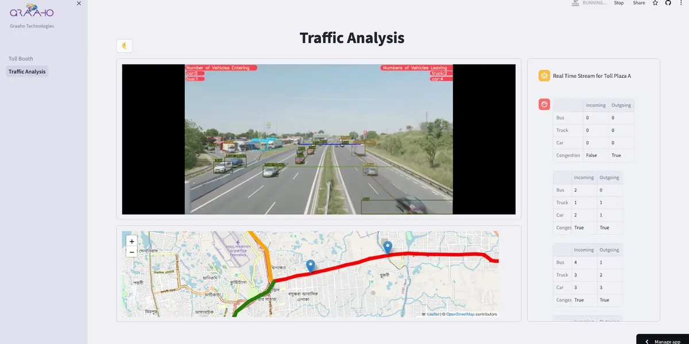
Vehicle analysis and toll collection from live video, with YOLOv8, Supervision and Kafka.
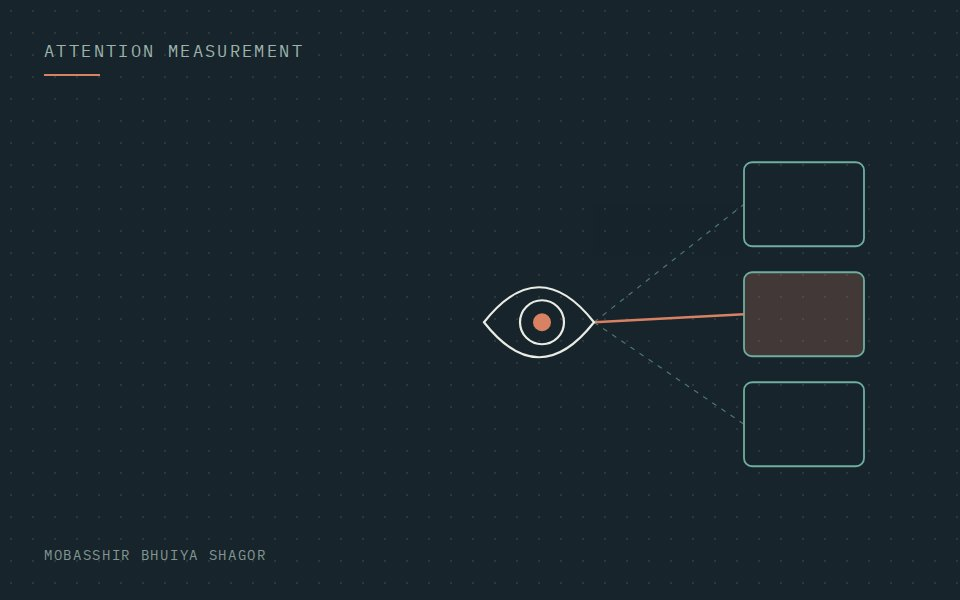
Eye tracking with MediaPipe to measure how long shoppers look at product displays; in alpha with a supermarket chain.
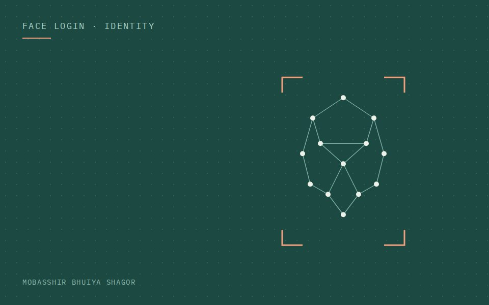
A face-recognition login service in PyTorch, inside an in-house identity platform modelled on Amazon Cognito.
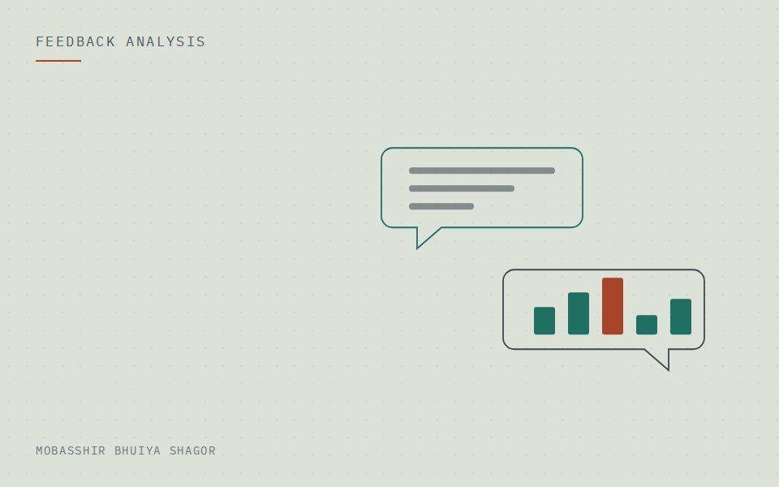
GPT-based extraction of sentiment, emotion and issues from social-media feedback, routed to the team that owns them.
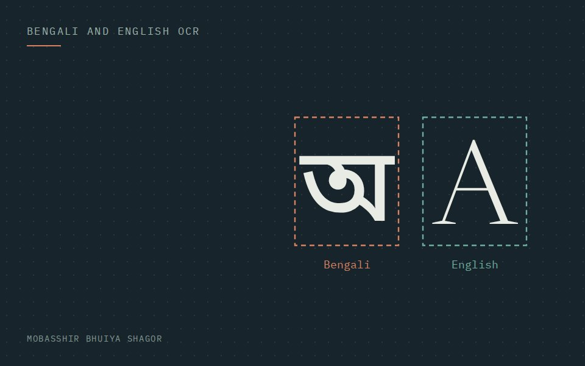
Identity-document verification and menu digitisation on PyTorch and EasyOCR, including a desktop annotation tool.
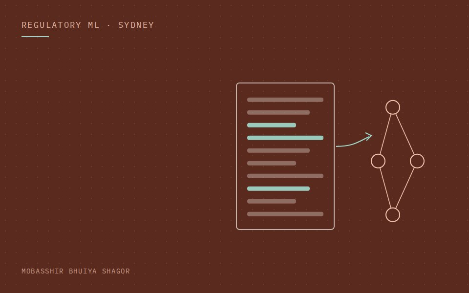
Obligations from regulatory PDFs, an entity extractor, and a rule recogniser at 80% accuracy and 0.78 F1, on a Kafka and Airflow platform I designed.
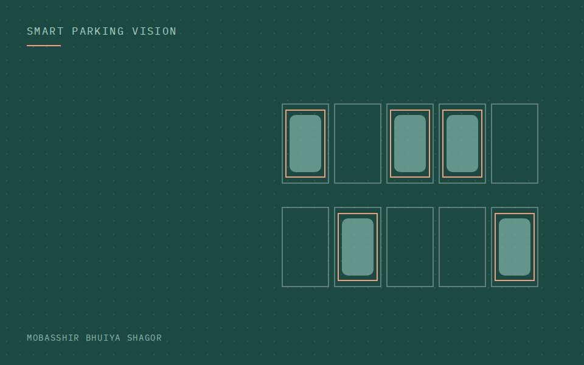
Vehicle, number-plate and parking-space detection for an automated parking system.
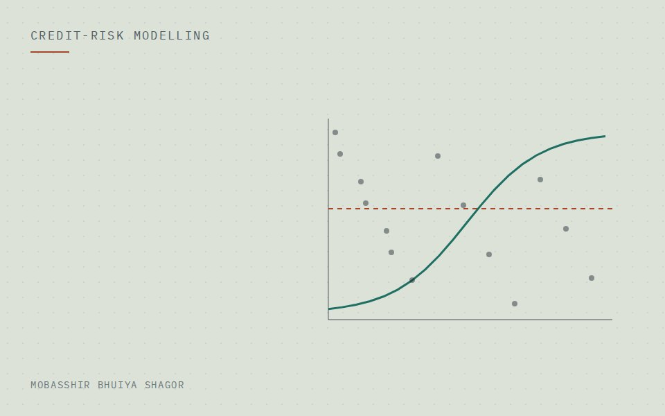
A credit-risk modelling application with a dataset visualiser, prediction analyser and reporting.
Translation, books, open source and decks
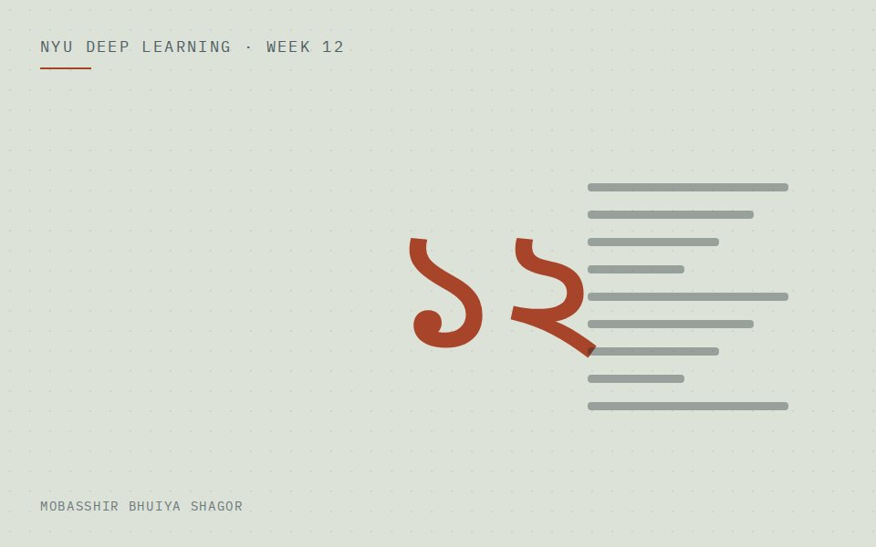
I translated Week 12 of the NYU Deep Learning course by Yann LeCun and Alfredo Canziani, the week on deep learning for language (word2vec, GPT, BERT), into Bengali. It is published on the course site alongside the other translations.
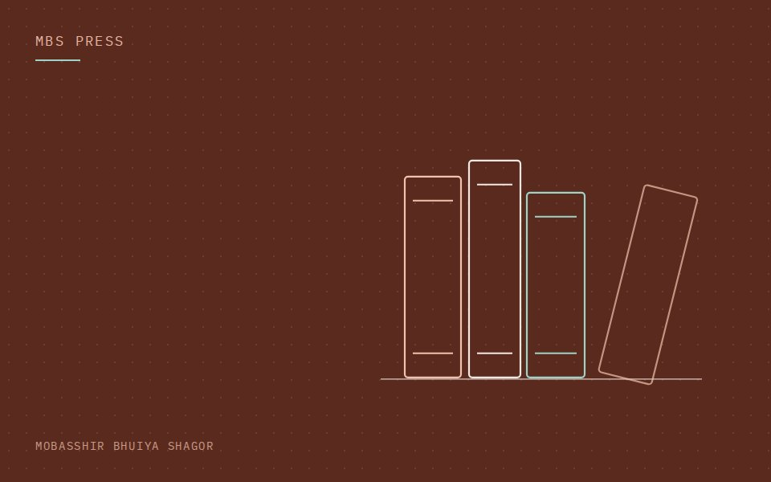
The Python Engineering Cookbook, second edition, and The AI-Era Engineering Playbook, both co-written with Jishnu Saha as first author; and Shipping with Claude, which I wrote alone: a team runbook for agentic coding tools across the software lifecycle, with a chapter on malicious code injection in agentic systems.
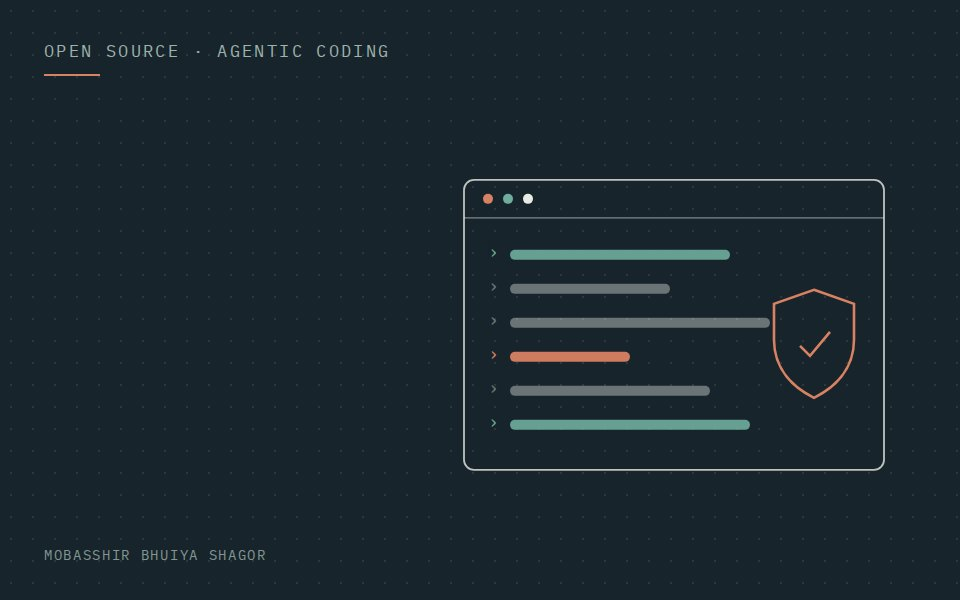
An orchestration template for agentic coding: four agents at different capability tiers, enforcement hooks and a verification toolchain. It encodes one rule I learned the hard way, after a read-only hook failed open on malformed JSON: authorization boundaries fail closed, while observability boundaries may fail open.
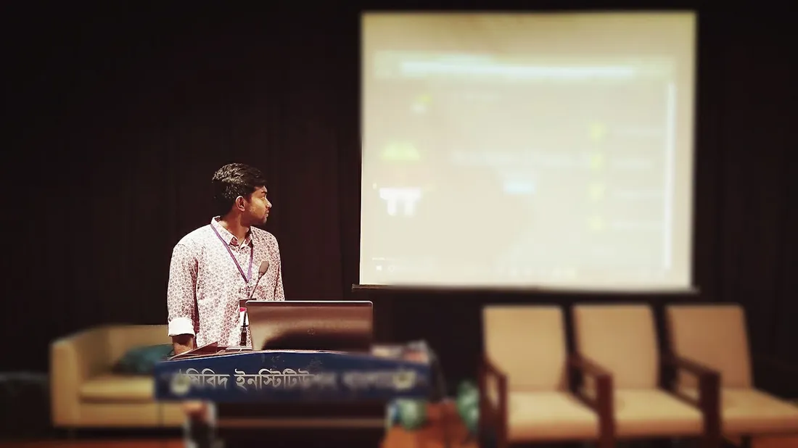
Talks
I have presented at ICCA, to the National University of Singapore, at Droidcon 2017 and to the BASIS National ICT Awards jury. The decks are below.
Two tracks that feed each other: research and production
B.Sc. in Computer Science and Engineering, American International University Bangladesh, 2014 to 2018, with a thesis that became the Categorized Affect Map paper.
Specialist Training and Prototype Development in Artificial Intelligence, National University of Singapore, 2020, delivered with the Singapore e-Government Leadership Centre and the Bangladesh Ministry of ICT.
Staff Machine Learning Engineer at Graaho Technologies since February 2023, leading the machine learning and backend team. Before that, at Graaho: Senior Machine Learning Engineer seconded to Renforce in Sydney (2021–2023), where I led a mixed team and built the ML behind a regulatory-compliance product; Machine Learning Engineer (2020–2021); and Data Scientist (2019–2020). Research assistant at the AIUB Data Science Lab from 2017 to 2018.
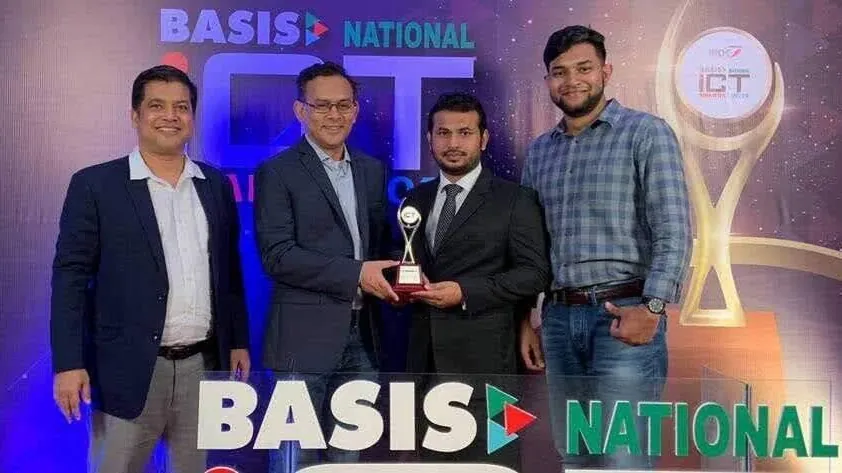
Mentor with Code to Communicate and Free The Mind, teaching programming to under-served students, 2018 to 2020. Study-group leader for the Udacity Bertelsmann and Intel Edge AI scholarship cohorts, where the cohorts of roughly 5,000 and 13,000 students voted me two "You Rock" awards.
Earlier work is on GitHub: MultiCoNER (SemEval 2022 Task 11), where replacing the CRF layer with BiLSTM-CRF improved precision, recall and F1 over the task baseline; Bengali handwritten grapheme classification; clickstream data warehousing; Azure ML pipelines; and edge inference on Intel OpenVINO.
Contact
I am looking for two things.
If either describes your group or team, I would be glad to send the one-page research summary or talk.
With an advisor working on evaluation, recommender systems, trustworthy ML or distribution shift.
Where the work includes building the instruments, not only the models.